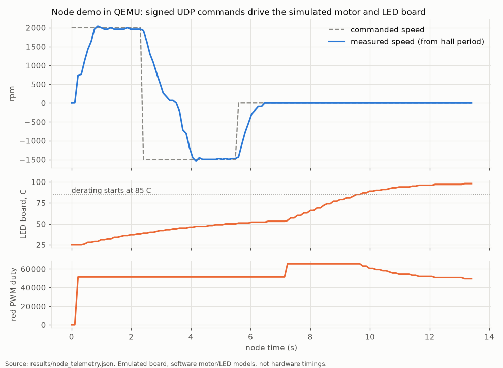
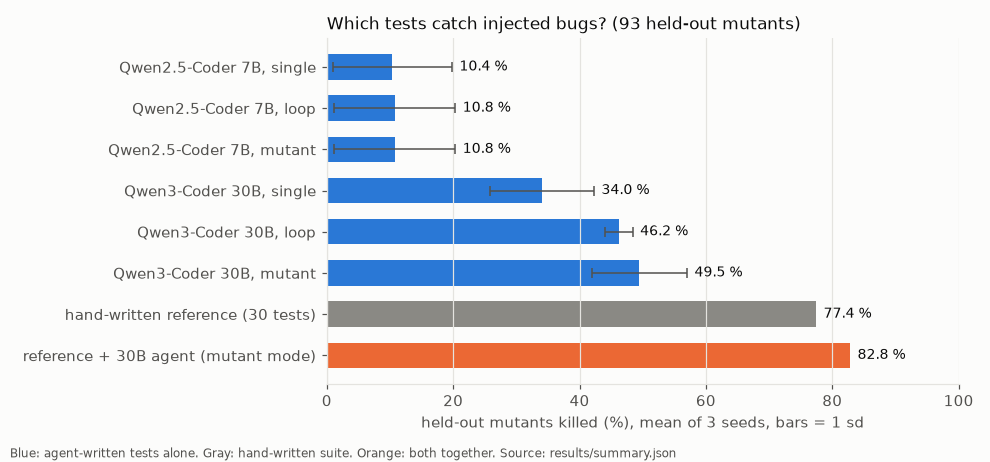
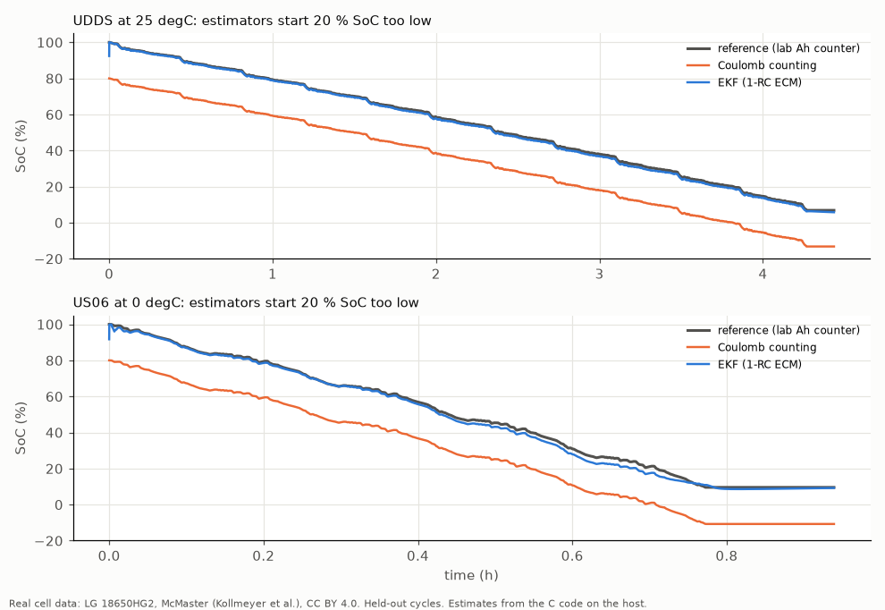

motor-led-mw
Small embedded C software for a car-style control unit: a brushless motor and an RGB LED driven over signed commands (Zephyr + TrustZone TF-M, PSA Crypto), a battery management module with an EKF state-of-charge estimator checked on real cell data, and mutation testing that measures whether the tests catch bugs, including tests written by a local AI agent. All in QEMU (Arm MPS2 boards), no real hardware. Jump to: Key results, Detailed results, Limits. Code, diagrams and the algorithms explained: github.com/pavanyadava007/motor-led-mw
What problem does this solve?
Modern cars contain many small control units that switch motors (seats, pumps, fans) and lights. Their software has to be small, predictable, and safe against forged commands. Battery packs also need software that watches every cell and estimates how much charge is left, even when the start value is wrong. This repo builds both kinds of software in portable C, runs them on emulated Arm chips, and then checks the tests themselves: it plants hundreds of small bugs in the code and measures how many the tests catch. It also tries a local AI model as a test writer and scores it on bugs it has never seen.
Key results
All numbers come from files in results/ and can be regenerated with the Makefile.
| Result | What it means | Source |
|---|---|---|
1,030 bytes of code, 0 bytes of RAM data (motor + LED + LIN + command library, Cortex-M23, -Os) | The middleware fits into very small automotive chips | results/size_m23.json, tools/size_m23.py |
| 10/10 protocol checks pass on the emulated node | Valid signed commands work; replayed, tampered, wrong-key, out-of-range and unknown frames are rejected | results/node_demo.json, tools/node_client.py |
| +2000 rpm reached within 5 % after 0.77 s of node time | The speed loop settles on the simulated motor (not a hardware timing) | results/node_demo.json |
| Hand-written tests kill 149 of 194 mutants (76.8 %) | 3 in 4 planted bugs in the middleware are caught by the 30 reference tests | results/ref_mutation.json, tools/mutate.py |
| AI agent alone: 49.5 % of held-out mutants; reference + agent: 82.8 % | The agent is weaker than a human suite, but adds 5 of the 21 bugs the human suite missed, in every seed | results/summary.md, agent/agent.py |
| Battery SoC error (RMSE) with a 20 % wrong start: EKF 0.57 to 0.86 % at 25 degC, 1.76 to 4.67 % at 0 degC; Coulomb counting about 20 % | The Kalman filter corrects a wrong start value on real cell data; plain charge counting cannot | results/bms/RESULTS.md, bms/tools/soc_eval.py |
| 8,118,504 float outputs bit-identical on emulated Cortex-M4F and x86-64 host | Host results can be trusted for the target | results/bms/RESULTS.md |
| Battery module: 62 unit tests pass (host, ASan/UBSan, emulated Cortex-M3), mutation score 89.9 % | The battery code is tested on the host and on the emulated target, and the tests catch 9 in 10 planted bugs | results/bms/host_tests.json, results/bms/mutation.json |
One full battery cycle: 4,689 emulated instructions, 4,282 B code (Cortex-M4F, -Os) | Light enough for a small MCU (instruction counts are emulated, not CPU cycles) | results/bms/profile.json, bms/tools/profile.py |
| 24/24 requirements traced to tests, 23 pass | One requirement (SoC accuracy at 0 degC) fails, and this is reported, not hidden | results/bms/TRACE.md |



Figures: python tools/make_figures.py draws the first two from results/node_telemetry.json and results/summary.json; bms/tools/soc_eval.py draws the third.
Detailed results
Node demo (QEMU mps2-an521, TF-M + Zephyr)
Non-secure Zephyr image: 72.7 kB flash. Median ack round trip 1.4 ms (QEMU on a cloud VM, not a hardware timing).
| Check over UDP | Expected | Result |
|---|---|---|
| set LED, set speed +2000 rpm | OK | OK |
| replay of the same frame | rejected (replay) | rejected |
| one tag bit flipped | rejected (MAC) | rejected |
| frame signed with a wrong key | rejected (MAC) | rejected |
| speed 5000 rpm (limit 3000) | rejected (argument) | rejected |
| unknown command | rejected (command) | rejected |
| reverse to -1500 rpm, stop, LED white | OK | OK |
On the simulated motor, +2000 rpm settles within 5 % after 0.77 s of node time, the reversal to -1500 rpm after 1.65 s, and stop brings it to 0.
Test agent study
3 seeds per model, temperature 0.2, models served locally by Ollama (4-bit) on one NVIDIA L4. Held-out half: 93 mutants the agent never sees.
| Model | Mode | Held-out mutants killed (mean ± sd) | Tests kept | Reference + agent, held-out |
|---|---|---|---|---|
| Qwen3-Coder 30B | single (one shot) | 34.0 % ± 8.2 | 31 | 81.7 % ± 1.1 |
| Qwen3-Coder 30B | loop (compiler + on-target feedback) | 46.2 % ± 2.1 | 38 | 82.4 % ± 0.6 |
| Qwen3-Coder 30B | mutant (+ surviving TRAIN mutants) | 49.5 % ± 7.5 | 44 | 82.8 % ± 0.0 |
| Qwen2.5-Coder 7B | single | 10.4 % ± 9.4 | 6 | 78.5 % ± 1.1 |
| Qwen2.5-Coder 7B | loop | 10.8 % ± 9.6 | 7 | 78.5 % ± 1.1 |
| Qwen2.5-Coder 7B | mutant | 10.8 % ± 9.6 | 7 | 78.5 % ± 1.1 |
| hand-written reference | - | 77.4 % | 30 | - |
What this shows:
• On its own the agent is weaker than a hand-written suite (best 49.5 % vs 77.4 %). The 30B model builds 92 % of its files on the first try, but no first-try file passed completely: it gets some expected values wrong when it works them out by hand (LIN parity bits, CMAC frame layouts).
• On-target feedback helps most: one shot to loop goes from 34.0 % to 46.2 %, and the spread across seeds drops from 8.2 to 2.1 points. Mutant feedback adds a little more on average, with high variance.
• Added to the hand-written suite, the agent's tests catch 5 of the 21 held-out mutants the hand suite missed, in every seed. Three appear in all seeds: an off-by-one in the LIN checksum loop that reads one byte past the buffer, a truncated reverse-commutation table, and an over-current debounce counter that is not reset.
• The 7B model builds only 33 % of its first-try files and does not recover with feedback.
• The final suites are regression tests of the current behaviour: when a test fails, the agent recomputes the expectation from the printed values, so a spec bug that the agent accepts still needs human review.
Each 30B agent run takes about an hour, 51 model calls and about 150k output tokens.
Battery SoC on held-out drive cycles (real cell data)
SoC error in % SoC. "start -20 %" means both estimators start at 80 % when the cell is really full.
| Held-out cycle | CC RMSE, start -20 % | EKF RMSE, start -20 % | EKF max error after 10 min | CC RMSE, -50 mA sensor offset | EKF RMSE, -50 mA sensor offset |
|---|---|---|---|---|---|
| UDDS, 25 degC | 20.01 | 0.86 | 1.43 | 4.62 | 1.47 |
| US06, 25 degC | 20.03 | 0.78 | 2.45 | 1.19 | 0.94 |
| LA92, 25 degC | 20.05 | 0.57 | 1.18 | 2.97 | 1.07 |
| Mixed1, 25 degC | 20.05 | 0.73 | 1.47 | 2.28 | 1.11 |
| Mixed2, 25 degC | 19.98 | 0.80 | 2.00 | 2.26 | 1.24 |
| UDDS, 0 degC | 20.03 | 2.97 | 4.21 | 4.36 | 3.40 |
| US06, 0 degC | 20.17 | 1.76 | 3.70 | 1.24 | 1.79 |
| LA92, 0 degC | 20.04 | 3.11 | 4.81 | 2.56 | 3.44 |
| HWFET, 0 degC | 20.00 | 4.67 | 6.62 | 1.54 | 4.68 |
| Mixed1, 0 degC | 20.00 | 3.20 | 5.07 | 2.08 | 3.55 |
| Mixed2, 0 degC | 19.97 | 3.14 | 4.85 | 2.20 | 3.53 |
• The EKF removes a 20 % start error that Coulomb counting keeps for the whole cycle.
• At 0 degC the 1-RC model is the limit. The EKF error after 10 minutes reaches 6.62 % (HWFET), so requirement BMS-REQ-015 (5 % after 10 minutes) is not met at 0 degC. With a correct start and a 50 mA current-sensor offset, the EKF beats Coulomb counting on all 5 cycles at 25 degC but is worse on 5 of 6 cycles at 0 degC. A second RC pair, hysteresis and temperature-dependent parameters are the next steps.
Battery profile (emulated Cortex-M4F)
Instruction counts come from a QEMU plugin and are emulated instruction counts, not CPU cycles or time.
| Item | Value |
|---|---|
| One battery cycle (monitor + state machine + 12 EKF steps + balancing + 3 CAN frames + RX E2E), -O2 | 4,689.2 instructions (6,701.2 with the bit-serial CRC) |
| One EKF step | 178.2 instructions |
| Code size (text incl. parameter tables), -Os | Cortex-M4F 4,282 B, Cortex-M33 4,266 B, Cortex-M3 4,482 B; 0 B data/bss |
RAM context / worst-case stack of bms_cycle() | 620 B / 208 B (-Os) |
Limits
• Emulation only. QEMU MPS2 boards, a LAN9118 Ethernet model, and software models of the motor and the LED board. Commutation, timing and current numbers say nothing about a real inverter.
• No battery hardware. No real pack, no measurement chip, no contactors, no CAN transceiver. Cell inputs in the unit tests are scripted; only the SoC study uses measured data, from one cylindrical cell on a lab tester.
• SoC model. Two temperatures (25 and 0 degC), one parameter set each. No OCV hysteresis, no second RC pair, no ageing, no cell-to-cell differences. The reference SoC is itself the lab tester's charge counter. All drive cycles start from full charge at rest, which makes the EKF start-up easy.
• Security. The node imports a demo key from firmware on first boot; a product would provision it at end of line. The 8-byte truncated CMAC with a 16-bit counter is a demo protocol, not a reviewed security design.
• Not certified. The middleware is not MISRA-checked or ISO 26262 qualified. The battery module is not DO-178C compliant; it only borrows practices (written requirements, traceability, mutation testing, static analysis). Its requirements were written for this demo, not taken from a real program.
• Mutation score depends on the operator set. Mutants with identical object code are treated as equivalent; others may still behave the same.
• Agent study uses two local models and three seeds each.
• Instruction counts are emulated, not cycles; timing on a real MCU (flash wait states, caches) will differ.